第1章 分子、细胞与模式生物
译自 Molecular Cell Biology, 第8版 · Lodish et al. · Molecules, Cells, and Model Organisms · 保留全部图表（点击图片可放大）
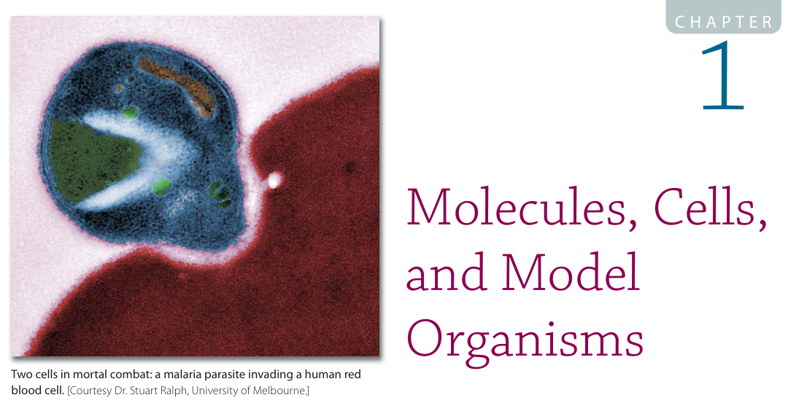
"若无进化之光，生物学中的一切都毫无意义。"
——西奥多修斯·杜布赞斯基，1973，《美国生物学教师》35:125–129
生物学是一门与物理学或化学根本不同的科学，后两者处理可用数学方程描述的物质不变性质。生物系统当然遵循化学和物理规律，但生物学是一门历史性科学，因为今日生命世界的形态和结构是数十亿年演化的结果。通过演化，所有生物都处在一棵家族树上，从远古生存的原始单细胞生物延伸到当今多样化的植物、动物和微生物（图 1-1、表 1-1）。查尔斯·达尔文（图 1-2）的伟大洞见是自然选择原理：生物随机变异并在其环境中竞争资源。只有存活并繁殖者才能传下其遗传特征。
OUTLINE
乍看之下，生物世界确实极为多样--从微小蕨类到高大冷杉，从显微镜下可见的单细胞细菌和原生动物到各种多细胞动物。事实上，细胞的大小和形状令人惊叹地多样（图 1-3）。一些细胞移动迅速且结构快速变化，如我们在阿米巴和轮虫影片中所见。另一些基本静止且结构稳定。氧会杀死某些细胞但对另一些却是绝对必需。多细胞生物中的大多数细胞与其他细胞密切相关。虽然一些单细胞生物孤立生存（图 1-3a），另一些形成群落或与其他类型生物密切共生（图 1-3b、d），如帮助植物从空气中固氮的细菌或生活在我们肠道帮助消化食物的细菌。
然而，令人眼花缭乱的外部生物形态之下隐藏着强大的统一性：由于共同祖先，所有生物系统都由含相同类型化学分子、并在细胞水平采用相似组织原理的细胞组成。尽管
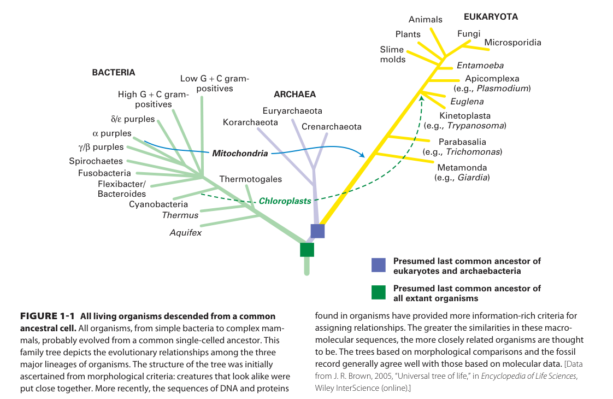
| common ancestral cell | 共同祖先细胞 |
| evolution | 演化 |
| bacteria | 细菌 |
| mammals | 哺乳动物 |
基本类型的生物分子在数十亿年演化中被保守，但它们组装成有功能细胞和生物体的模式已发生相当大变化。
我们现在知道，化学上由脱氧核糖核酸（DNA）组成的基因最终决定生物结构并维持细胞功能的整合。许多基因编码蛋白质，蛋白质是构成细胞结构和执行细胞活动的主要分子。基因结构或组织的改变（突变）提供可改变生物结构和功能的随机变异。虽然绝大多数随机突变对基因或蛋白质功能无可见影响，许多是有害的，只有少数赋予生物体进化优势。在所有生物中，DNA 突变不断发生，使细胞结构和功能随时间发生可能有利的小改变。全新的细胞结构很少被创造；更常见的是，现有细胞结构发生变化以更好地使生物适应新环境。蛋白质的微小变化可引起其功能的重要改变或完全废除其功能。
例如，在某生物中，一个基因可能随机重复，之后该基因的一个拷贝及其编码蛋白保留原功能，而随时间第二个拷贝突变使其蛋白采取略有不同甚至全新功能。在一些生物的演化中，整个基因组重复，使许多基因的第二个拷贝经历突变并获得新功能。生物的细胞组织在此过程中起根本作用，因为它允许这些改变通过先前演化细胞的小改变而发生，赋予新能力。结果是亲缘相近的生物有非常相似的基因和蛋白质，以及相似的细胞和组织组织。
多细胞生物（包括人体）由如此密切相关的元素组成，以至于任何单一元素都不能脱离其他而被充分理解。生物体含器官，器官由组织组成，组织由细胞构成，细胞由分子形成（图 1-4）。生命系统的统一性由许多层次的相互关系协调：分子在器官间和细胞间传递信息，组织由细胞分泌的分子界定并与其他组织整合。一般而言，我们将生物系统划分的所有层次都相互联系。
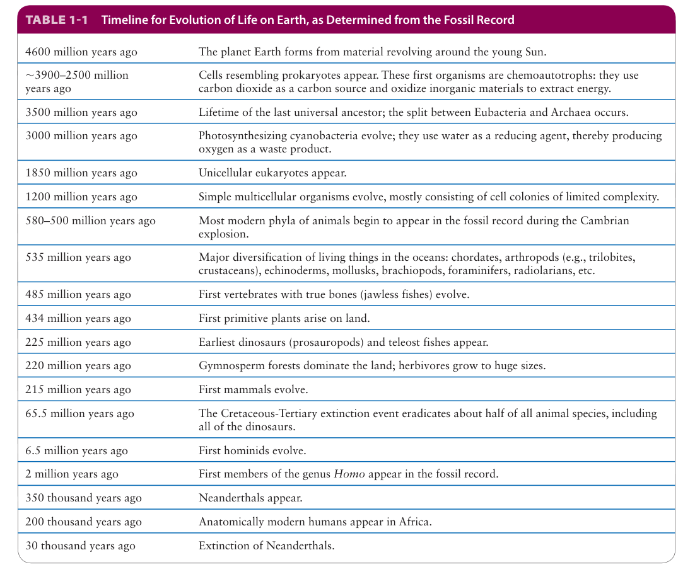
| 4600 million years ago | 46亿年前 |
| eukaryote | 真核生物 |
| metazoan | 后生动物 |
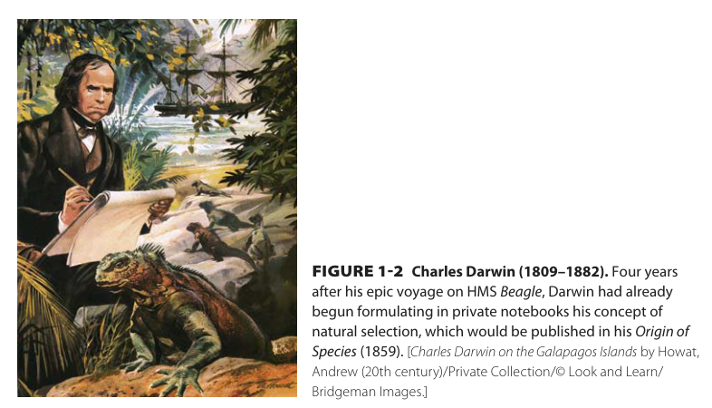
| natural selection | 自然选择 |
| Charles Darwin | 查尔斯·达尔文 |
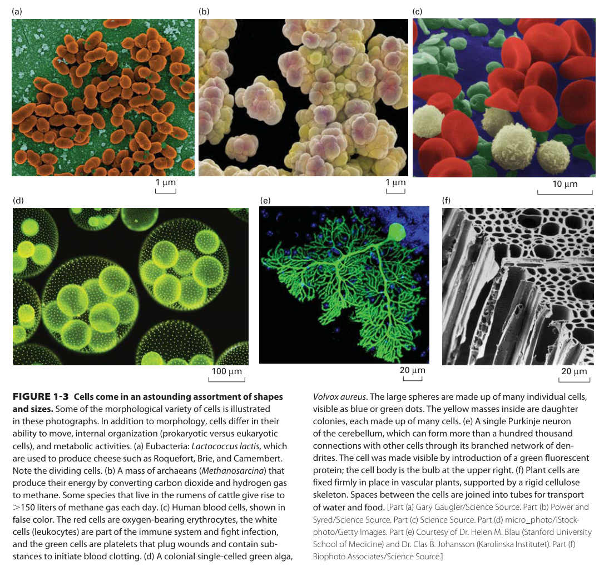
| single-celled | 单细胞 |
| multicellular | 多细胞 |
| bacteria | 细菌 |
| protozoan | 原生动物 |
然而，要了解生物系统，我们必须一次只考察生命系统的一小部分。细胞生物学是合理的起点，因为生物体可被视为由相互作用的细胞组成，细胞是存在的最接近自主生物单位的实体。地球上所有生命的最后一个共同祖先是一个单细胞（见图 1-1），在细胞水平所有生命都极为相似。所有细胞使用相同的分子构建块、相似的遗传信息储存维护和表达方法，以及相似的能量代谢、分子运输、信号传导、发育和结构过程。
本章我们介绍细胞的共同特征。从生物系统中的主要小分子和大分子简要讨论开始。然后讨论当今生物中保守的细胞结构和功能的基本方面，先聚焦原核生物（无细胞核的单细胞生物）及其在研究生命基本分子中的用途。接着讨论真核细胞（有明确细胞核的细胞）的结构和功能，聚焦其众多细胞器。随后一节描述单细胞真核生物在分子细胞生物学研究中的应用，聚焦酵母和引起疟疾的寄生虫。
我们现在有数千种后生动物（多细胞动物）的完整基因组序列，这些序列为
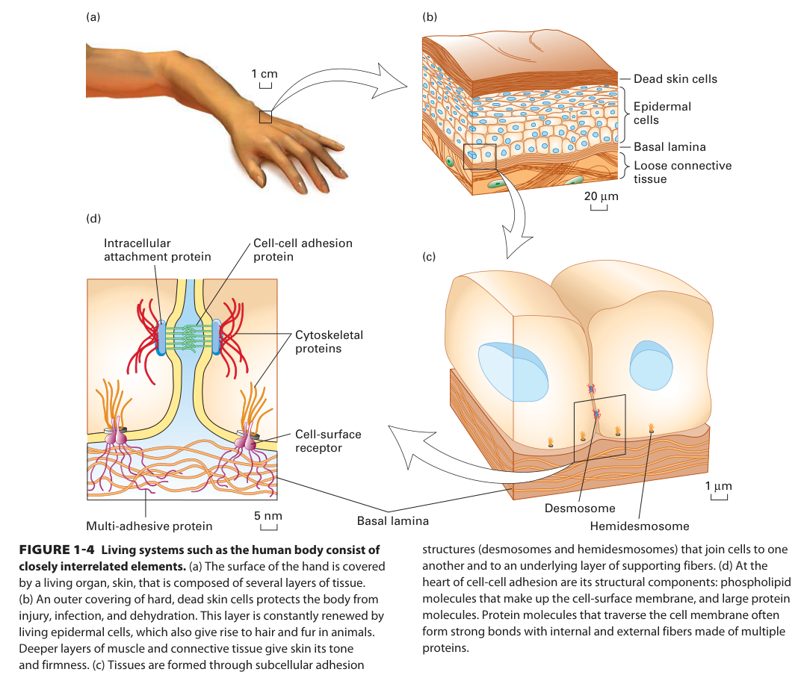
| organ | 器官 |
| tissue | 组织 |
| molecule | 分子 |
| skin | 皮肤 |
基因和生物的演化提供了相当深入的认识。本章最后一节展示如何用这些信息来精炼生物间进化关系以及我们对人类发育的理解。事实上，生物学家把演化用作研究工具：如果一个基因及其蛋白在所有后生动物中保守但不见于单细胞生物，该蛋白可能在所有后生动物中有重要功能，因而可在最适合研究的任何后生动物中研究。由于许多类型后生动物细胞的结构和功能也被保守，我们现在对许多细胞类型的结构和功能有相当详细的了解，包括肌肉和肝脏细胞以及衬于肠道并形成皮肤的表皮细胞片。但其他细胞--尤其是形成我们神经和免疫系统的多种类型--仍然神秘；对这些及其他形成我们身体的细胞系统和器官还需要许多重要的细胞生物学实验。
1.1 生命的分子
虽然大分子多聚物是分子细胞生物学的焦点，但小分子是所有细胞过程上演的舞台。水、无机离子和各种相对小的有机分子（图 1-5）按重量占生命物质的 75% 至 80%，水约占细胞体积的 75%。这些小分子（包括水）作为细胞内发生的许多反应（包括能量代谢和细胞信号传导）的底物。细胞以不同方式获取这些小分子。离子、水和许多小有机分子被输入细胞（见第 11 章）；其他小分子在细胞内合成，常通过一系列化学反应（见第 12 章）。
即使在许多小分子（如糖、维生素和氨基酸）的结构中，我们也能看到演化的印记。例如，除甘氨酸外所有氨基酸都有不对称碳原子，但只有 l-立体异构体（从不 d-立体异构体）被掺入蛋白质。类似地，细胞中只发现 d-葡萄糖的立体异构体，从不发现镜像 l-立体异构体（见图 1-5）。在生物演化的早期阶段，我们共同的细胞祖先进化出催化一种
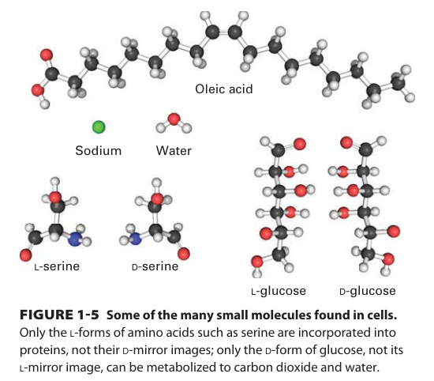
| L-stereoisomer | L立体异构体 |
| D-stereoisomer | D立体异构体 |
| amino acid | 氨基酸 |
| glucose | 葡萄糖 |
立体异构体而非另一种反应的能力。这些选择如何发生尚不知晓，但如今这些选择已被锁定。
一种重要且普遍保守的小分子是腺苷三磷酸（ATP），它在两个化学键中储存易得的化学能（图 1-6）。当 ATP 中一个富能键断裂形成 ADP（腺苷二磷酸）时，释放的能量可被利用来驱动需能过程如肌肉收缩或蛋白质生物合成。为获得制造 ATP 的能量，所有细胞分解食物分子。例如，当糖降解为二氧化碳和水时，储存在糖分子化学键中的能量被释放，其中大部分可被"捕获"到 ATP 的富能键中。细菌、植物和动物细胞都可通过此过程制造 ATP。此外，植物和少数其他生物可从阳光采集能量在光合作用中形成 ATP。
其他小分子（如某些激素和生长因子）作为指导细胞活动的信号（见第 15、16 章），神经元（神经细胞）通过释放和感知某些小信号分子相互通讯（见第 22 章）。例如，惊吓事件的强大生理效应来自小分子激素肾上腺素瞬时充斥全身，调动"战或逃"反应。
某些小分子（单体）可通过
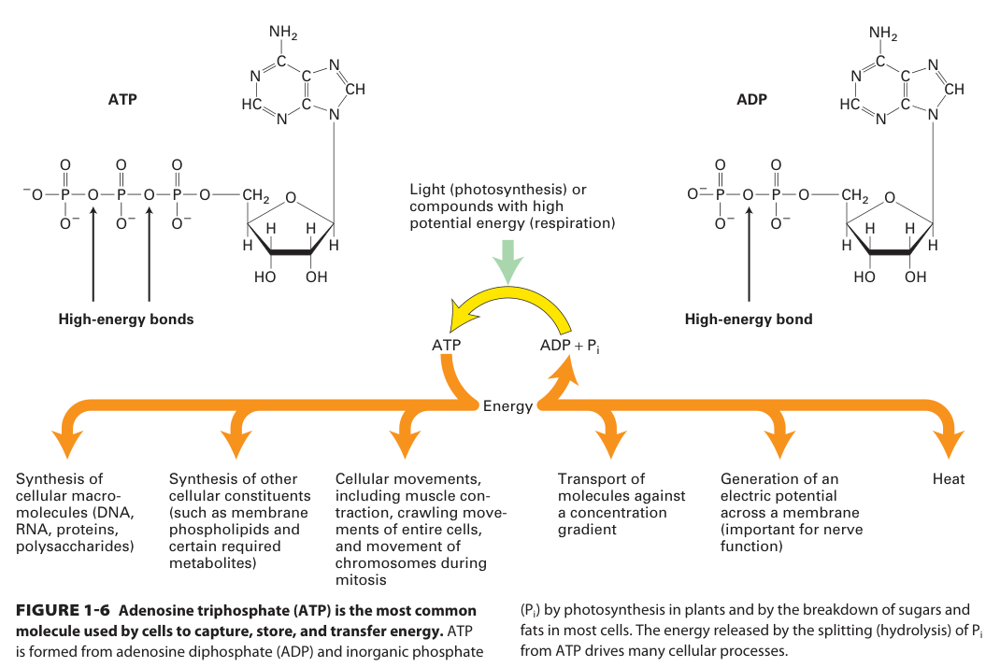
| ATP | ATP |
| ADP | ADP |
| phosphoanhydride bond | 磷酸酐键 |
重复一种共价化学连接反应连接形成多聚物（也称大分子）。细胞产生三类大分子：多糖、蛋白质和核酸。例如，糖是用于形成多糖的单体。d-葡萄糖的不同多聚物形成纤维素（植物细胞壁的重要成分）和糖原（肝和肌肉中葡萄糖的储存形式）。细胞注意提供合成大分子所需前体的适当小分子混合物。
蛋白质赋予细胞结构并执行大多数细胞任务
蛋白质是细胞的主力，是细胞大分子中含量最丰富、功能最多样的。细胞将 20 种不同氨基酸以线性链连接，每条有确定序列，形成蛋白质（见图 2-14），通常长 100 至 1000 个氨基酸。在聚合过程中或之后，线性氨基酸链折叠成复杂形状，赋予蛋白质独特的三维结构和功能（图 1-7）。人通过从其他分子合成氨基酸或分解所吃蛋白质获得氨基酸。
蛋白质在细胞中有多种功能。许多蛋白质是酶，加速（催化）涉及小分子或大分子的化学反应（见第 3 章）。某些蛋白质催化所有蛋白质合成的步骤；其他催化
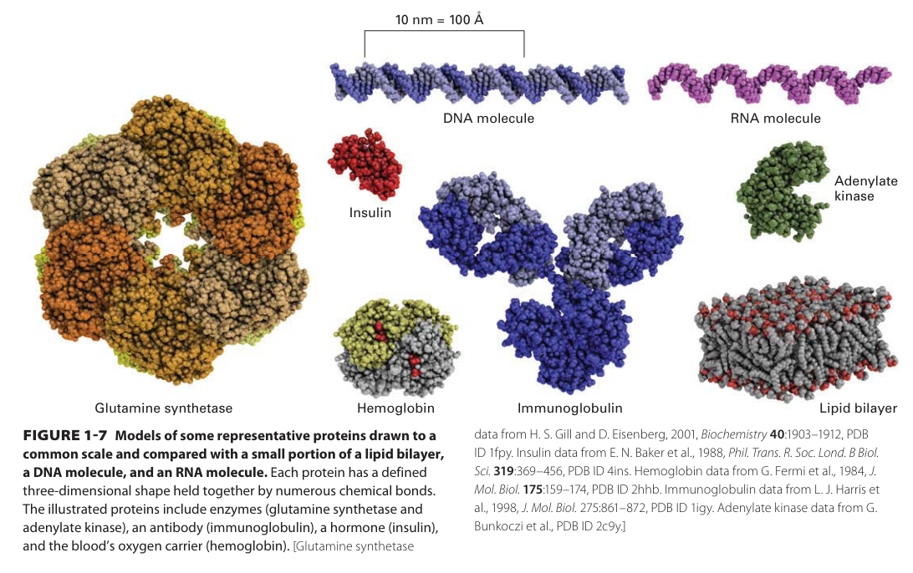
| protein | 蛋白质 |
| lipid bilayer | 脂双层 |
| DNA | DNA |
| RNA | RNA |
DNA 和 RNA 等大分子的合成。细胞骨架蛋白作为细胞的结构成分，例如形成内骨架。其他与细胞骨架相关的蛋白利用 ATP 化学键中的能量驱动亚细胞结构（如染色体）乃至整个细胞的运动（见第 17、18 章）。还有其他蛋白质结合相邻细胞或形成胞外基质的一部分（见图 1-4）。蛋白质可作为传感器，随温度、离子浓度或其他细胞性质变化而改变形状。许多嵌入细胞表面（质）膜的蛋白质输入输出各种小分子和离子（见第 11 章）。一些蛋白质（如胰岛素）是激素；其他是激素受体，结合其靶蛋白或小分子然后产生调节细胞功能特定方面的信号。其他重要类别的蛋白质结合 DNA 特定片段，开关基因（见第 9 章）。事实上，分子细胞生物学很大一部分由研究特定蛋白质在特定细胞类型中的功能组成。
核酸在正确的时间和地点携带编码信息以制造蛋白质
最受公众关注的分子是脱氧核糖核酸（DNA），其功能性质使其成为细胞的"主分子"。DNA 的三维结构由 James D. Watson 和 Francis H. C. Crick 于 1953 年首次提出，由两条绕共同轴盘绕的长螺旋链形成
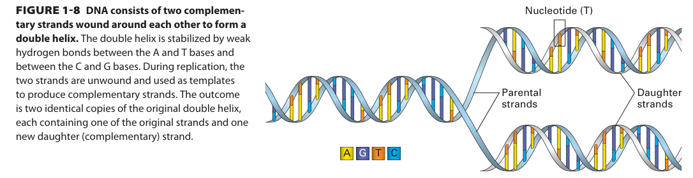
| double helix | 双螺旋 |
| complementary | 互补 |
| hydrogen bond | 氢键 |
| base | 碱基 |
双螺旋（图 1-8）。DNA 的双螺旋结构是自然最宏伟的构造之一，对遗传现象（遗传决定的特征从一代传到下一代）至关重要。
DNA 链由称为核苷酸的单体组成；这些单体常称为碱基，因为它们含环状有机碱基（见第 5 章）。四种不同核苷酸（缩写 A、T、C、G）连接形成 DNA 链，碱基部分从链骨架向内突出。两条链通过碱基结合并扭曲形成双螺旋。每个 DNA 双螺旋有简单构造：一条链有 A 处，另一条链有 T，每个 C 与 G 配对（见图 1-8）。两条链的这种互补匹配如此强，以至于若在适当盐浓度和温度下分开互补链，它们会自发重新拉合。此性质对 DNA 复制和遗传至关重要（第 5 章将学），也是第 6 章详述的许多研究 DNA 分子技术的基础。
DNA 携带的遗传信息存在于其序列（沿链的核苷酸线性顺序）。DNA 的特定片段（基因）携带制造特定蛋白质的指令。通常基因含两部分：编码区指定蛋白质的氨基酸序列；调节区结合特定蛋白质并控制何时在哪些细胞中制造该基因的蛋白质。
大多数细菌有数千个蛋白质编码基因；酵母和其他单细胞真核生物约 5000 个。人和其他后生动物有 13,000 至 23,000 个，而许多植物更多。如本章稍后讨论，细菌中许多基因指定普遍发生反应（如葡萄糖代谢和核酸及蛋白质合成）所催化蛋白质的序列。这些基因及其编码蛋白在所有生物中保守，因此细菌细胞中这些基因和蛋白质功能的研究已产生对这些基本生命过程的深刻认识。类似地，酵母等单细胞真核生物中许多基因编码在所有真核生物中保守的蛋白质；我们将见酵母如何在细胞分裂等过程研究中产生对癌症等人类疾病的深刻认识。
DNA 序列中储存的信息如何被使用？细胞用两个连续过程将 DNA 中的编码信息转化为蛋白质（图 1-9）。第一个过程称为转录，基因的蛋白质编码区被复制成单链核糖核酸（RNA），其序列与双链 DNA 中的一条相同。大酶 RNA 聚合酶催化核苷酸连接成 RNA 链，以 DNA 为模板。真核细胞中，初始 RNA 产物被加工成更小的信使 RNA（mRNA）分子，移出细胞核到细胞质（核外区域）。此处核糖体（由 RNA 和蛋白质组成的极复杂分子机器）执行第二个过程，称为翻译。翻译时，核糖体按近乎通用的遗传密码以 mRNA 序列精确规定的顺序组装和连接氨基酸。第 5 章详述执行转录和翻译的细胞组分。
除在信息从核到质转移中的作用外，RNA 可作为构建分子机器的框架。例如核糖体由四条 RNA 链结合 50 多种蛋白质构成，成为异常精确高效的 mRNA 阅读器和蛋白质合成器。虽然细胞中大多数化学反应由蛋白质催化，但少数（如核糖体形成连接蛋白质中氨基酸的肽键）由 RNA 分子催化。
早在整个人类基因组被测序前，已明显只有约 10% 人类 DNA 由蛋白质编码基因组成，多年来其余 90% 被视为"垃圾 DNA"！近年我们了解到，所谓垃圾 DNA 的大部分实际被复制成数千种 RNA 分子，虽不编码蛋白质却在细胞中同等重要（见第 10 章）。但目前我们只知这些丰富非编码 RNA 中极少数的功能。
像酶一样，某些 RNA 分子（称为核酶）催化化学反应，如核糖体内的 RNA。许多科学家支持 RNA 世界假说，该假说提出能自我复制的 RNA 分子是当前生命形式的先驱；
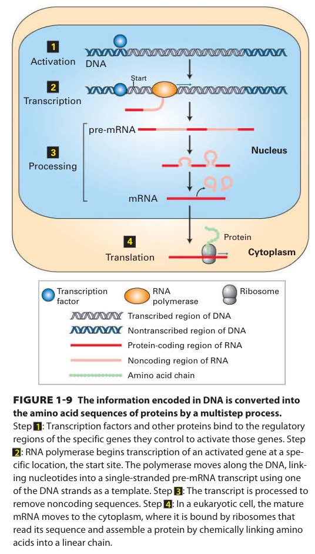
| transcription | 转录 |
| translation | 翻译 |
| RNA polymerase | RNA聚合酶 |
| ribosome | 核糖体 |
数十亿年前，RNA 世界逐渐演化为当今生物的 DNA、RNA 和蛋白质世界。
所有生物都必须控制其基因何时何地转录。我们体内几乎所有细胞都含全套人类基因，但每种细胞类型中只有部分基因活跃（开启）并用于制造蛋白质。例如，肝细胞产生肾细胞不产生的一些蛋白质，反之亦然。此外，许多细胞通过开关特定基因响应外部信号或外部条件变化，从而调整其蛋白质库以满足当前需要。这种基因活动控制依赖称为转录因子的 DNA 结合蛋白，它们结合 DNA 特定序列并作为开关，激活或抑制特定基因的转录，第 9 章讨论。
磷脂是所有细胞膜的保守构建块
在所有生物中，细胞膜主要由磷脂分子的双层（两层）组成。每个二分分子有"喜水"（亲水）的"头"和"怕水"（疏水）的"尾"。膜的两层磷脂取向为所有亲水头朝向膜内或外表面，疏水尾埋在内部（图 1-10）。少量其他脂质（如胆固醇）插入此磷脂框架。细胞膜相对细胞大小极薄。若将细菌或酵母细胞放大约 1 万倍到足球大小，质膜约如一张纸厚！
磷脂膜对水、所有离子和几乎所有亲水小分子不通透。因此每个细胞的每个膜都含允许特定离子和小分子跨膜的蛋白质组。其他膜蛋白用于将细胞附着到其他细胞或周围多聚物；还有其他赋予细胞形状或允许形状变化。第 7、11 章将学膜及分子如何跨膜。
新细胞总是通过细胞分裂来自亲代细胞。我们已见新 DNA 分子的合成以亲代 DNA 两链为模板，使每个子代 DNA 分子与亲代有相同序列。同时，新膜通过脂质和蛋白质掺入亲代细胞现有膜而制造，并通过分裂分配给子细胞。因此膜合成像 DNA 合成一样以亲代结构为模板。
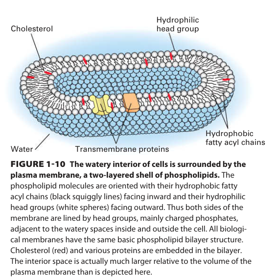
| plasma membrane | 质膜 |
| phospholipid bilayer | 磷脂双层 |
| hydrophilic | 亲水 |
| hydrophobic | 疏水 |
1.2 原核细胞结构与功能
生物世界由两类细胞组成：原核和真核。原核细胞（如细菌）由质膜包围的单个封闭区室组成，无明确细胞核，内部组织相对简单（图 1-11）。真核细胞含明确膜界细胞核和包围细胞器的广泛内膜（见图 1-12）。
原核生物包括两个界：古菌和真细菌
近年对多种原核生物 DNA 序列的详细分析揭示了两个不同界：真细菌（常简称"细菌"）和古菌。真细菌是单细胞生物，包括蓝细菌（"蓝绿藻"），可为单细胞或丝状细胞链。图 1-11 展示典型真细菌细胞的一般结构；古菌细胞有相似结构。细菌细胞通常 1–2 μm 大小，由含细胞质、被质膜包围的单个封闭区室组成。基因组由单个环状 DNA 分子组成；许多原核生物还含称为质粒的额外小环状 DNA 分子。虽然细菌细胞无明确细胞核，DNA 被广泛折叠和凝缩到细胞中央区域（称为拟核）。相比之下，大多数核糖体在细胞质中。一些细菌还有细胞膜内陷（称为中间体），与
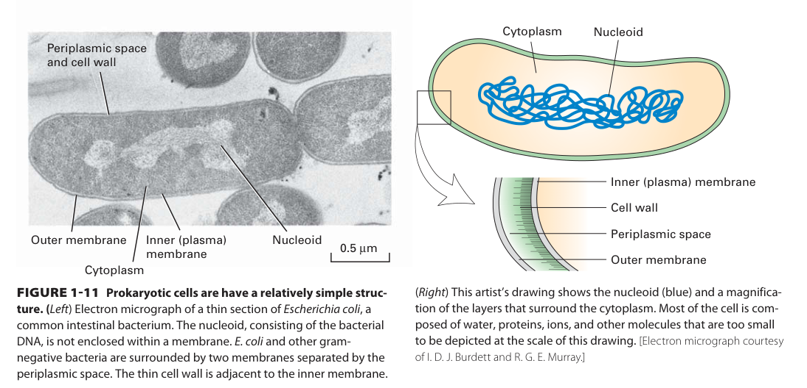
| prokaryotic | 原核 |
| nucleoid | 拟核 |
| cell wall | 细胞壁 |
| plasma membrane | 质膜 |
DNA 合成和蛋白质分泌相关。许多蛋白质在胞质或质膜中精确定位，表明存在精细的内部组织。与真核生物（见图 1-9）不同，细菌 mRNA 几乎不加工。由于细菌 DNA 和胞质间无膜屏障，核糖体能在 RNA 聚合酶合成 mRNA 一部分时立即结合；因此原核生物中转录和翻译同时进行。
细菌细胞有细胞壁，位于质膜外侧。细胞壁由肽聚糖（蛋白质和寡糖复合物）层组成；帮助保护细胞和维持形状。一些细菌（如大肠杆菌）有薄内壁和外膜，之间为壁膜间隙。此类细菌不被革兰氏技术染色，归为革兰氏阴性。其他细菌（如多粘芽孢杆菌）有较厚细胞壁且无外膜，可被革兰氏染色，归为革兰氏阳性。
除区分古菌与真细菌的 DNA 序列差异外，古菌细胞膜组成与真细菌和真核生物截然不同。许多古菌生长在不寻常常极端的环境中，可能类似生命首次在地球上出现时的古老条件。例如嗜盐菌（"喜盐者"）需高盐浓度生存，嗜热嗜酸菌（"喜热喜酸者"）生长在 80 °C 热硫泉中，pH 常低于 2。还有其他古菌生活在无氧环境，通过将水与二氧化碳结合生成甲烷（CH₄）。
大肠杆菌广泛用于生物学研究
细菌谱系包括大肠杆菌，一种受喜爱的实验生物，自然中常见于土壤和动物肠道。大肠杆菌和其他几种细菌作为实验生物有诸多优势。它们在含葡萄糖和盐的简单廉价培养基中快速生长，能合成所有必需氨基酸、脂质、维生素和其他必需小分子。像所有细菌，大肠杆菌有控制基因活动的精细机制，现已充分理解
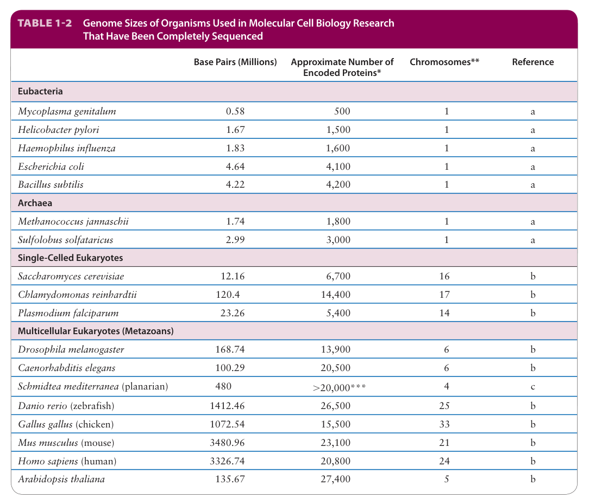
| genome | 基因组 |
| protein-coding gene | 蛋白质编码基因 |
| Eubacteria | 真细菌 |
| Archaea | 古菌 |
（见第 9 章）。随时间推移，研究者开发了该生物遗传分析的强大系统。这些系统得益于细菌基因组小、易获突变体、可向细菌转移基因的技术、对细菌基因控制和蛋白质功能的丰富知识，以及细菌基因组中基因相对映射的简单性。第 6 章见大肠杆菌如何用于重组 DNA 研究。
大肠杆菌等生长在土壤和人肠道等多种环境的细菌约 4000 个基因，编码约相同数量蛋白质（表 1-2）。
支原体等寄生菌从其宿主细胞获取氨基酸和其他营养物，缺乏催化氨基酸和某些脂质合成反应的酶基因。许多编码 DNA、RNA、蛋白质合成和膜功能必需蛋白质的细菌基因在所有生物中保守，我们对这些重要细胞过程的大部分知识首先来自大肠杆菌和其他细菌的研究。例如，某些大肠杆菌膜蛋白跨质膜输入氨基酸，在序列、结构和功能上与某些哺乳动物脑细胞输入称为神经递质的神经间信号小分子的膜蛋白密切相关（见第 11、22 章）。
由于其许多基因和蛋白质及其功能在所有生物中保守，大肠杆菌被科学家选为受喜爱的模式生物：一个实验系统，在其中研究特定基因或蛋白质或细胞/生物体功能或调节的方面，可提供对其他物种相似分子或过程的理解。本章我们将遇到其他因像大肠杆菌易于培养和研究而被选的模式生物。当然，许多细菌引起严重疾病，对它们的研究常聚焦于理解其独特生物学和发现选择性杀死它们而不伤人畜宿主的抗生素。
1.3 真核细胞结构与功能
真核生物包括植物和动物界的所有成员以及原生动物（proto "原始"，zoan "动物"），后者 exclusively 单细胞，包括真菌和阿米巴。真核细胞通常约 10–100 μm，一般比细菌大得多。典型人成纤维细胞（结缔组织细胞）约 15 μm，体积和干重约为大肠杆菌细胞的数千倍。阿米巴（单细胞原生动物）细胞直径可达约 0.5 mm，是成纤维细胞的 30 多倍。真核细胞像原核细胞一样被质膜包围。但与原核细胞不同，大多数真核细胞（人红细胞是例外）还含广泛内膜，包围特定亚细胞区室（细胞器）并使之与细胞质分开（图 1-12）。胞质溶胶（细胞质中无细胞器的部分）含水、溶解离子、小分子和蛋白质。植物细胞和大多数真菌细胞被细胞壁包围，赋予细胞刚性形状并允许快速细胞扩展。
所有真核细胞有许多相同细胞器和其他亚细胞结构。许多细胞器被单层磷脂膜包围，但细胞核、线粒体和叶绿体由两层膜包围。每个细胞器膜和每个细胞器内部空间都有独特蛋白质组，使其能执行特定功能，包括催化必需化学反应的酶。定义这些亚细胞区室的膜含控制其内部离子组成的蛋白质，使其通常不同于周围胞质溶胶和其他细胞器。此处描述所有真核细胞共同的细胞器以及仅见于某些类型真核生物的几个。从赋予真核细胞形状和组织细胞器的蛋白质开始。
细胞骨架有许多重要功能
细胞质含统称为细胞骨架的纤维蛋白阵列（见第 17、18 章）。三类纤维组成细胞骨架：微管（直径 20 nm，由微管蛋白多聚物构成）、微丝（直径 7 nm，由肌动蛋白构成）和中间丝（直径 10 nm）。所有这些纤维都是一个或多个小蛋白亚基多个拷贝的长链（图 1-13）。细胞骨架赋予细胞强度和刚性，帮助维持形状；这在神经元中也许最明显，微管和其他纤维允许形成从胞体伸出的细长突起--轴突和树突（见图 1-3e 和第 22 章）--使每个神经元能执行其特化功能。细胞骨架纤维还控制细胞内结构运动；例如一些细胞骨架纤维连接细胞器或提供细胞器和染色体移动的轨道。其他纤维在细胞运动中起关键作用。也许最重要的是，没有细胞骨架及其相关蛋白提供的组织框架，细胞分裂和染色体及细胞器分配到两个子细胞就不能发生。
纤毛和鞭毛是质膜的类似延伸。它们含一束微管赋予形状，并与马达蛋白一起允许有节奏地摆动。它们推动物质跨上皮表面（图 1-14），使精子能游泳，推卵通过输卵管（见第 18 章）。如第 16 章详述，大多数脊椎动物细胞含至少一根在细胞-细胞信号传导中起关键作用的纤毛。
细胞核含 DNA 基因组、RNA 合成装置和纤维基质
细胞核是动物细胞中最大的细胞器，被两层膜包围，每层是含多种蛋白质的磷脂双层
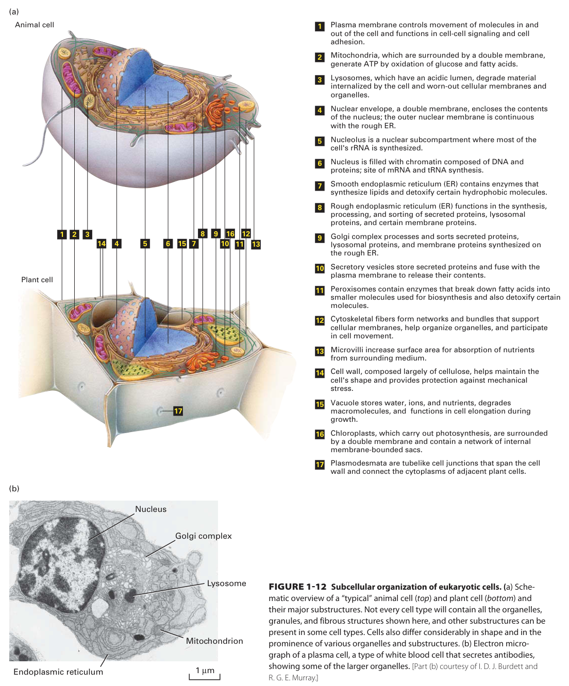
| organelle | 细胞器 |
| mitochondrion | 线粒体 |
| nucleus | 细胞核 |
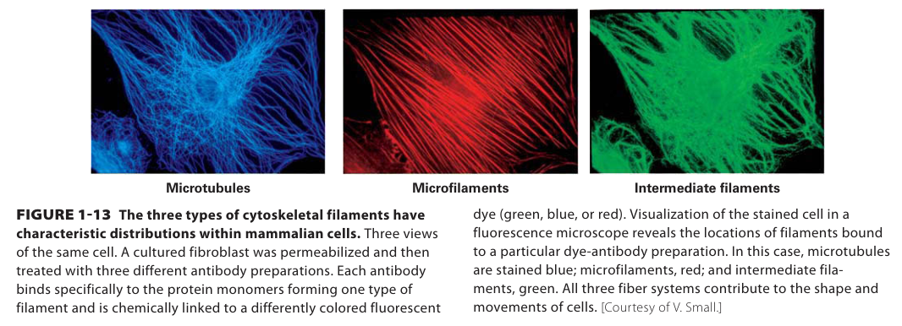
| cytoskeleton | 细胞骨架 |
| microtubule | 微管 |
| microfilament | 微丝 |
| intermediate filament | 中间丝 |
（图 1-15）。内核膜定义细胞核本身。大多数细胞中外核膜与内质网连续，内外核膜间空间与内质网腔连续（见图 1-15a）。两层核膜在核孔复合物处似融合，核孔复合物是环状结构，由特定膜蛋白组成，物质通过它在核与胞质溶胶间移动。核孔结构及通过它的受调控物质运输在第 10、13 章详述。称为核纤层蛋白的中间丝蛋白沿内核膜内表面形成二维网络（核纤层），赋予形状和刚性。核纤层分解发生在细胞分裂早期，第 19 章详述。在生长或分化细胞中，核代谢活跃，因为它是 DNA 复制和核糖体 RNA、mRNA 及多种
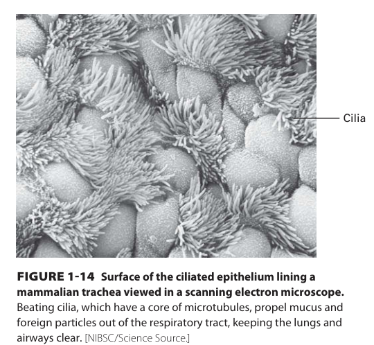
| cilia | 纤毛 |
| epithelium | 上皮 |
| microtubule | 微管 |
非编码 RNA 合成的场所（见第 5、9 章）。核内常可见一个致密亚区室（核仁），此处合成核糖体 RNA 并组装核糖体（见图 1-15b 和第 10 章）。
生物体中全部 DNA 称为其基因组。大多数原核细胞中，大部分或全部遗传信息存在于约 1 毫米长的单个环状 DNA 分子中；该分子多次折叠，位于微米大小细胞的中央区域（见图 1-11）。相比之下，真核细胞核中 DNA 分布在多个长线形结构（染色体）中。染色体的长度和数目在特定物种的所有细胞中相同，但物种间不同（见表 1-2）。每条染色体含一个与众多组蛋白和其他蛋白质结合的 DNA 分子。不分裂的核中染色体分散，密度不足以在光学显微镜下观察。只有细胞分裂时个体染色体才在光镜下可见。当不分裂细胞在电子显微镜下观察时，核的非核仁区域（核质）可见深浅染色区。深色区（常与核膜密切相关）含不能转录成 RNA 的凝缩浓集 DNA，称为异染色质（见图 1-15b）。
染色体被碱性染料强烈染色，只在细胞分裂时 DNA 高度凝缩时在光学和电子显微镜下可见（图 1-16）。虽然原核生物的大基因组 DNA 分子与蛋白质结合，但细菌染色体内 DNA 的排列与真核细胞线性染色体大不相同；细菌染色体是环状的，与不同类型蛋白质结合。
真核细胞含大量内膜结构
我们早先注意到，与原核细胞不同，大多数真核细胞含包围
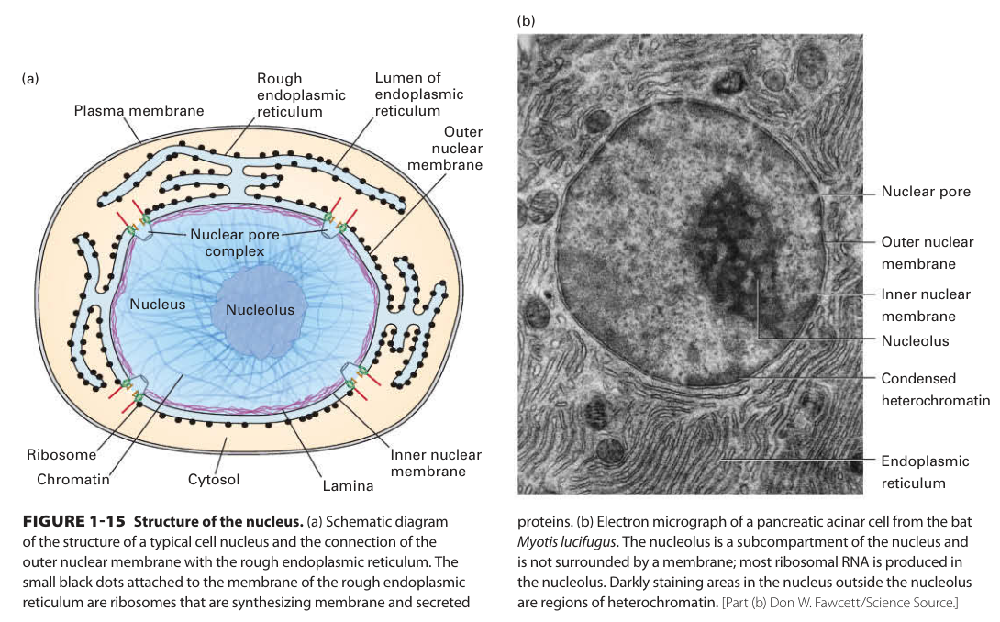
| nuclear envelope | 核膜 |
| nucleolus | 核仁 |
| heterochromatin | 异染色质 |
| nuclear lamina | 核纤层 |
| nuclear pore | 核孔 |
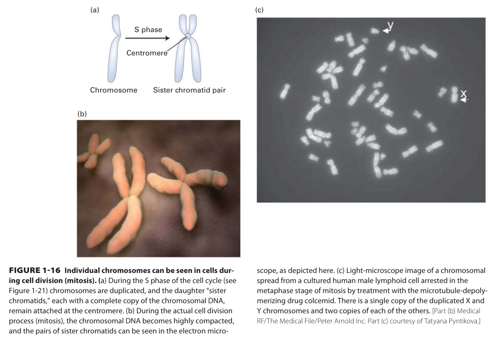
| chromosome | 染色体 |
| mitosis | 有丝分裂 |
| sister chromatid | 姐妹染色单体 |
特定亚细胞区室（细胞器）的广泛内膜。此处回顾细胞器及其功能。
内质网和高尔基体 真核细胞中一般最大的膜包围的细胞器是内质网（ER）--一个由封闭扁平膜囊（称为潴泡）组成的广泛网络（图 1-17；另见图 1-15a）。内质网在细胞中有多种功能，但在脂质、分泌蛋白和多种膜蛋白合成中尤为重要。滑面内质网因无核糖体而光滑，是脂肪酸和磷脂合成场所。
相比之下，粗面内质网的胞质面布满核糖体；这些核糖体合成某些膜和细胞器蛋白以及几乎所有将从细胞分泌的蛋白质（见第 13 章）。当生长的多肽从核糖体出来时，在嵌入膜的特定转运蛋白帮助下穿过粗面 ER 膜。新合成的膜蛋白保持与粗面 ER 膜结合，将分泌的蛋白积聚在腔（细胞器的水性内部）中。蛋白质在粗面 ER 合成几分钟后，大多数在小膜泡运输囊泡中离开细胞器。这些囊泡从无核糖体覆盖的粗面 ER 区域出芽，将蛋白质带到另一膜界细胞器--高尔基体（见图 1-17）。如第 14 章详述，分泌和膜蛋白在高尔基体中经历一系列酶催化的化学修饰，这些对蛋白质正常功能至关重要。
待分泌蛋白和膜蛋白在高尔基体修饰后，由第二组囊泡从复合物运出，这些囊泡从高尔基体一侧出芽。一些囊泡携带
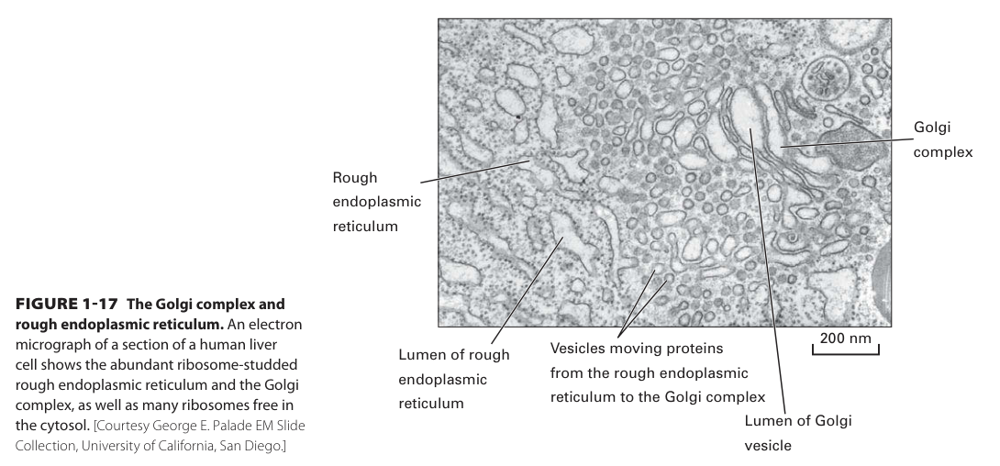
| Golgi complex | 高尔基体 |
| rough endoplasmic reticulum | 粗面内质网 |
| ribosome | 核糖体 |
destined for 质膜的膜蛋白或将从细胞释放到胞外空间的可溶蛋白；其他携带可溶或膜蛋白到溶酶体或其他细胞器。胞内运输囊泡如何"知道"与哪些膜融合及在何处交付内容也在第 14 章讨论。
内体 虽然质膜中的转运蛋白介导离子和小分子跨脂双层进入细胞，但胞外环境中的蛋白质和其他可溶大分子通过内吞作用内化。在此过程中，质膜片段内陷形成有被小窝，其胞质面排列引起囊泡形成的特定蛋白质组。小窝从膜掐断成含胞外物质的小膜泡。囊泡被交付并与内体（膜界小管和囊泡的分拣站）融合（图 1-18）。从此区室，一些膜蛋白回收回质膜；其他膜蛋白在最终与溶酶体融合降解的囊泡中运输。整个内吞途径第 14 章详述。
溶酶体 溶酶体是胞内膜形成封闭区室（其腔组成与周围胞质溶胶大不相同）能力的极好例子。溶酶体仅见于动物细胞，负责降解对细胞或生物体已过时的许多组分。老化细胞器在溶酶体中降解的过程称为自噬（"吃自己"）。通过内吞或吞噬进入细胞的物质也可在溶酶体中降解（见图 1-18）。吞噬中，大的不溶颗粒（如细菌）被质膜包围并内化。
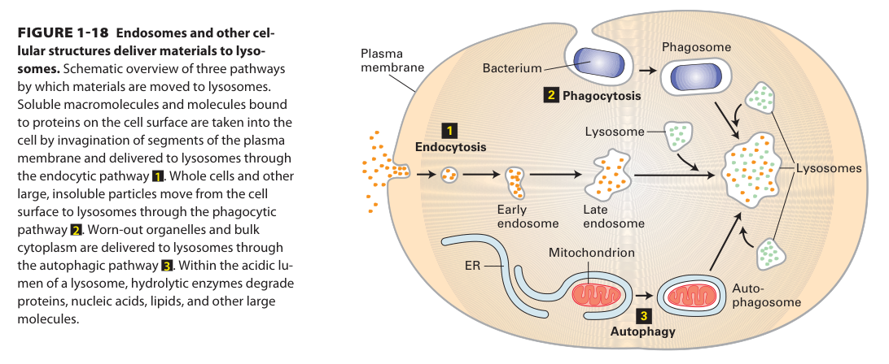
| endosome | 内体 |
| lysosome | 溶酶体 |
| endocytosis | 内吞 |
| autophagy | 自噬 |
| phagocytosis | 吞噬 |
溶酶体含一组将多聚物降解为单体亚基的酶。例如核酸酶将 RNA 和 DNA 降解为单核苷酸构建块；蛋白酶降解多种蛋白质和肽；磷酸酶从单核苷酸、磷脂和其他化合物去除磷酸基；还有其他酶降解复杂多糖和糖脂为更小单位。所有这些溶酶体酶（统称酸性水解酶）在酸性 pH 下工作最有效。酸性 pH 帮助变性蛋白质，使其可被溶酶体水解酶作用。这些酶在细胞和大多数胞外液体的中性 pH 下活性较低。因此若溶酶体将酶释放到胞质溶胶（pH 7.0–7.3），它们对胞质组分几乎不降解。胞质和核蛋白质一般在溶酶体中不降解，而在胞质溶胶中的蛋白酶体（大多蛋白复合物）中降解（见第 3 章）。
过氧化物酶体 所有动物细胞（除红细胞外）和许多植物及真菌细胞含过氧化物酶体，一类直径 0.2–1.0 μm 的近球形细胞器。过氧化物酶体含几种氧化酶：使用分子氧氧化有机物质并在此过程中形成过氧化氢（H₂O₂，腐蚀性物质）的酶。过氧化物酶体还含大量过氧化氢酶，将过氧化氢降解为水和氧（见第 12 章）。植物种子含乙醛酸循环体，氧化储存脂质作为碳和能量来源的小细胞器。它们与过氧化物酶体相似，含许多相同类型酶及用于将脂肪酸转化为葡萄糖前体的额外酶。
植物液泡 大多数植物细胞含至少一个膜界液泡，积聚和储存水、离子和小分子营养物（如糖和氨基酸）。液泡膜中的多种膜蛋白允许这些分子从胞质溶胶
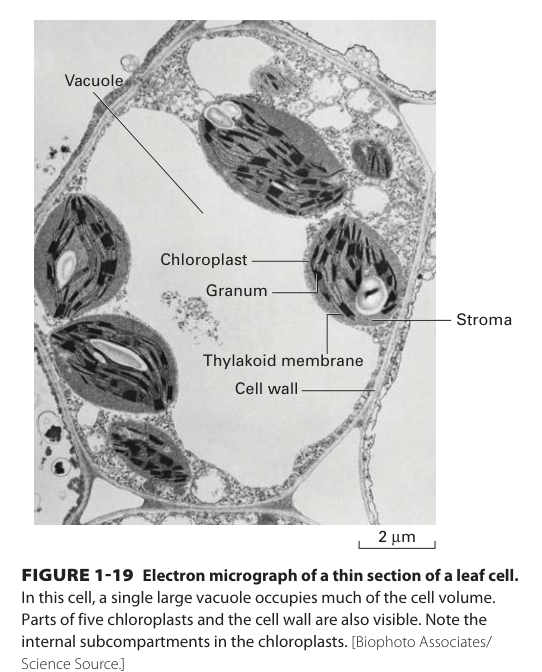
| vacuole | 液泡 |
| chloroplast | 叶绿体 |
| thylakoid | 类囊体 |
| stroma | 基质 |
运输并在液泡腔中保留。液泡的数目和大小取决于细胞类型和发育阶段；单个液泡可占成熟植物细胞的 80%（图 1-19）。像溶酶体，液泡腔含一系列降解酶并有酸性 pH，由液泡膜中相似转运蛋白维持。因此植物液泡也可有与动物细胞溶酶体相似的降解功能。相似
储存液泡见于绿藻和真菌等许多微生物。
线粒体是有氧细胞 ATP 产生的主要场所
大多数真核细胞含许多线粒体（图 1-20），占细胞质体积的 25%。这些复杂细胞器是有氧代谢中 ATP 产生的主要场所，一般大小仅次 于细胞核、液泡和叶绿体。包围线粒体的两层膜组成和功能不同。外线粒体膜含允许许多分子从胞质溶胶移动到内外膜间膜间隙的蛋白质。内线粒体膜通透性低得多，约 20% 脂质 80% 蛋白质--蛋白质比例高于其他细胞膜。内膜表面积因大量内折（嵴）突入基质（中央水性空间）而大增。
非光合细胞中，ATP 合成的主要燃料是脂肪酸和葡萄糖。1 分子葡萄糖完全有氧降解为二氧化碳和水偶联合成多达 30 分子 ATP（来自 ADP 和无机磷酸，见图 1-6）。真核细胞中，葡萄糖降解的初始阶段在胞质溶胶进行，每分子葡萄糖产生 2 分子 ATP。氧化和
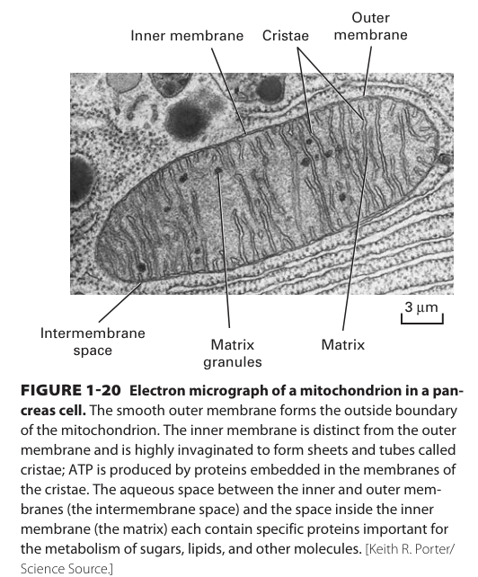
| mitochondrion | 线粒体 |
| outer membrane | 外膜 |
| inner membrane | 内膜 |
| cristae | 嵴 |
| matrix | 基质 |
ATP 合成的末端阶段由线粒体基质和内膜中的酶执行（见第 12 章）；每分子葡萄糖多达 28 分子 ATP 在线粒体产生。类似地，脂肪酸氧化为二氧化碳形成的几乎所有 ATP 都在线粒体产生。因此线粒体可视为细胞的"发电厂"。
线粒体含小 DNA 分子，编码少量线粒体蛋白；大多数线粒体蛋白由核 DNA 编码。如第 12 章讨论，流行的内共生假说假设线粒体通过真核细胞前体对古细菌的内吞产生；细菌质膜演化为内线粒体膜。
叶绿体含进行光合作用的内部区室
除液泡外，叶绿体是植物和绿藻细胞中最大和最具特征的细胞器（见图 1-19）。内共生假说（见第 12 章）假设这些细胞器通过原始光合细菌的内吞产生。叶绿体可长达 10 μm，典型厚 0.5–2 μm，但大小和形状在不同细胞中变化，尤其在藻类中。除包围叶绿体的内外膜外，此细胞器还含称为类囊体的广泛内部互连膜界囊泡系统，类囊体扁平成盘。类囊体常形成称为基粒的堆，嵌入称为基质的水性基质中。类囊体膜含绿色色素（叶绿素）和其他吸光色素，以及光合作用中产生 ATP 的酶。一些 ATP 用于将二氧化碳转化为三碳中间体（由基质中的酶催化）；中间体然后输出到胞质溶胶转化为糖。
线粒体和叶绿体中 ATP 形成的分子机制非常相似，第 12 章解释。除被两层膜包围外，叶绿体和线粒体有其他共同特征：都常在细胞内迁移，都含自己的 DNA（编码一些关键细胞器蛋白，见第 12 章）。线粒体或叶绿体 DNA 编码的蛋白质在细胞器内核糖体上合成。但每个细胞器的大部分蛋白质由核 DNA 编码并在胞质溶胶合成；这些蛋白质通过第 13 章描述的过程掺入细胞器。
所有真核细胞使用相似周期调节分裂
单细胞真核生物、动物和植物都使用基本相同的细胞周期（准备细胞分裂的一系列事件）
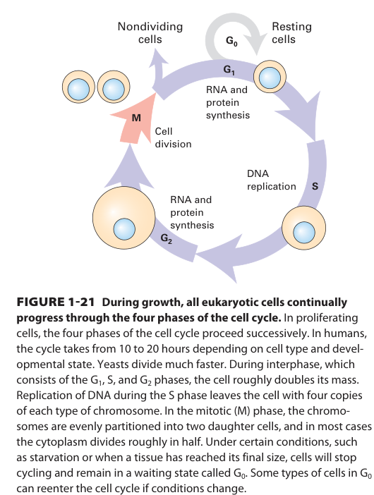
| cell cycle | 细胞周期 |
| S phase | S期 |
| M phase | M期 |
| mitosis | 有丝分裂 |
和相同的实际分裂过程（有丝分裂）。真核细胞周期通常分四期（图 1-21）。染色体及其携带的 DNA 在 S（合成）期复制。复制染色体在 M（有丝分裂）期分离（细胞在此期分裂），每个子细胞获得每条染色体的一份。M 和 S 期由两个间隙期（G1 和 G2）分开，期间制造 mRNA、蛋白质、脂质和其他细胞组分，细胞增大。
最佳条件下，一些细菌（如大肠杆菌）可每 30 分钟分裂一次形成两个子细胞。大多数真核细胞生长和分裂需更长时间，通常数小时。此外，真核细胞周期通常受高度调控（见第 19 章）。这种紧密控制防止在缺乏必需营养物或某些激素信号时细胞和组织的失衡过度生长。成体动物中一些高度特化的细胞（如神经元和横纹肌细胞）极少分裂（如果分裂的话）。然而，生物体通常替换磨损细胞或响应新需求产生更多细胞，如响应运动或损伤从未分化干细胞产生新肌肉细胞。另一例是人到更高海拔需要更多捕获氧能力时形成额外红细胞。癌症的根本缺陷是丧失控制细胞生长和分裂的能力。第 24 章我们考察导致不适当时失控细胞增殖的分子和细胞事件。
1.4 单细胞真核模式生物
我们对真核细胞分子功能的当前理解很大程度上建立在对少数几种生物（模式生物，图 1-22）的研究上。由于基因、蛋白质、细胞器、细胞类型等的进化保守，用一个实验生物获得的生物结构和功能发现常适用于其他。因此研究者通常用最适合快速完整回答所提问题的生物进行研究，知道在一个生物中获得的结果可能广泛适用。事实上，许多生物（特别是大鼠、蛙、海胆、鸡和黏菌）一直且继续对细胞生物学研究极为有价值。随着越来越多生物的整个基因组被测序，越来越多的其他物种被用于研究，特别是基因、细胞和生物演化的研究以及生物如何适应不同生态位。
如我们所见，细菌是研究几种细胞功能的优秀模型，但它们缺乏真核生物的细胞器。酵母等单细胞真核生物用于研究真核细胞结构和功能的许多基本方面。蠕虫、果蝇和小鼠等后生动物模型用于研究更复杂的组织和器官系统及发育。如本节和下节所见，几种真核模式生物广泛用于理解复杂细胞系统和机制。
酵母用于研究真核细胞结构和功能的基本方面
一组单细胞真核生物--酵母--在真核细胞形成和功能的分子及遗传分析中证明极为有用。酵母及其多细胞近亲霉菌（合称真菌）在分解植物和动物残体以再利用中有重要生态作用。它们还制造众多抗生素，用于面包、啤酒和葡萄酒制造。
用于制造面包和啤酒的常见酵母酿酒酵母在本书中频繁出现，因为它已证明是极其有用的实验生物。酿酒酵母细胞中表达的约 6000 种不同蛋白质的同源物见于大多数（即使不是所有）真核生物，对细胞分裂或个体真核细胞器功能重要。我们对内质网和高尔基体中促进蛋白质分泌的蛋白质的
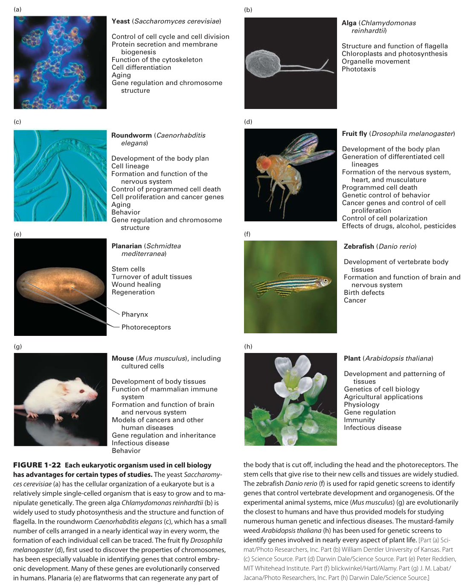
| model organism | 模式生物 |
| S. cerevisiae | 酿酒酵母 |
| Chlamydomonas | 衣藻 |
| Plasmodium | 疟原虫 |
| Drosophila | 果蝇 |
| C. elegans | 线虫 |
| planaria | 涡虫 |
大部分认识首先在酵母中阐明（见第 14 章）。酵母对鉴定许多调节细胞周期和催化 DNA 复制及转录的蛋白质也必不可少。酿酒酵母（图 1-23a；另见图 1-22a）和其他酵母对分子和细胞生物学家有许多优势：
● 大量酵母细胞可从单个细胞容易廉价地培养；此类克隆中细胞遗传相同且生化性质相同。可从大量细胞纯化个体蛋白质或多蛋白复合物然后详细研究。
● 酵母细胞可为单倍体（含每条染色体一份）或二倍体（含两份），两种形式都可通过有丝分裂分裂；此能力使分离和鉴定编码必需酵母细胞蛋白基因的突变相对直接。
● 酵母像许多生物一样有允许细胞间基因交换的性周期。饥饿条件下，二倍体细胞经历减数分裂（见第 19 章）形成单倍体子细胞，有两种类型（a 和 α 细胞）。若单倍体 a 和 α 细胞相遇，可融合形成 a/α 二倍体细胞（含每条染色体两份，各来自一个亲本细胞，图 1-23b）。
用酿酒酵母等单一物种作为模式生物，全世界数万科学家用多种实验技术进行的研究结果可结合产生对单种细胞类型的更深理解。如我们在本书多次所见，基于酿酒酵母研究的结论常证明对所有真核生物为真，并形成探索多细胞动物和植物中更复杂过程的基础。
酵母突变导致关键细胞周期蛋白的鉴定
生化研究可告诉我们许多关于个体蛋白质的信息，但不能证明它对细胞分裂或任何其他细胞过程是必需的。蛋白质的重要性最坚定地被证明：若阻止其合成或使其无功能的突变对所研究过程产生不利影响。
在经典遗传学方法中，科学家分离和表征缺乏正常生物能做某事能力的突变体。常进行大型遗传"筛选"以寻找不能完成某过程（如细胞分裂或肌肉形成）的许多不同突变个体（如果蝇、酵母细胞）。突变通常由诱变剂（以大致随机方式促进突变的化学或物理试剂）处理产生。但我们如何分离和维持某必需过程（如细胞分裂或蛋白质分泌，对生存必需）有缺陷的突变生物或细胞？
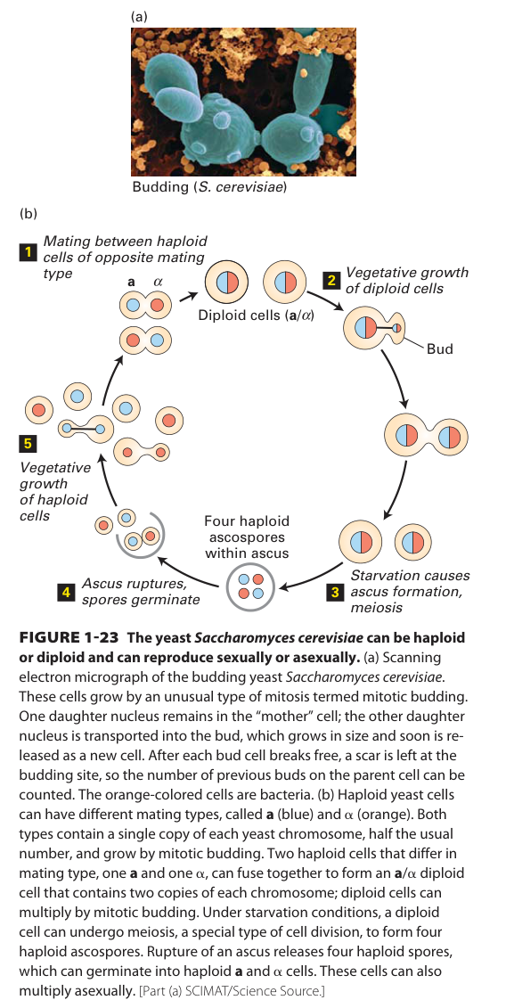
| haploid | 单倍体 |
| diploid | 二倍体 |
| budding | 出芽 |
| a cell | a细胞 |
| α cell | α细胞 |
一种方法是分离温度敏感突变。这些突变体能在允许温度生长，但不能在另一（通常更高）非允许温度生长。正常细胞在两温度都能生长。大多数情况下，温度敏感突变体产生改变的蛋白，在允许温度工作但在非允许温度展开且无功能。温度敏感突变的筛选最易在单倍体
生物（如酵母）中进行，因为它们只有每基因一份，故突变立即有后果。
通过分析改变单倍体酵母细胞分裂的众多不同温度敏感突变，遗传学家发现了细胞分裂必需的大多数基因，而最初对这些基因编码何种蛋白质或这些蛋白质如何参与过程一无所知。一般而言，遗传学的巨大力量是揭示特定细胞功能所需所有蛋白质的存在和相关性，无需事先知道其生化身份或分子功能。这些"突变定义"的基因可用第 6 章讨论的重组 DNA 技术分离和复制。有了分离的基因，编码蛋白可在试管或工程细菌或培养细胞中产生。这样生化学家可研究细胞分裂必需基因是否编码与其他蛋白质或 DNA 结合或在细胞分裂中催化特定化学反应的蛋白质（见第 19 章）。
这些酵母细胞周期基因大多也见于人细胞，编码蛋白有相似氨基酸序列。来自不同生物但氨基酸序列相似的蛋白质称为同源蛋白；此类蛋白质可有相同或相似功能。值得注意的是，已表明人细胞周期蛋白在缺陷同源酵母蛋白的突变酵母中表达时能"挽救缺陷"（即允许细胞正常生长），从而证明该蛋白在非常不同类型真核细胞中发挥作用的能力。此实验结果（为 Paul Nurse 赢得诺贝尔奖）尤为显著，因为当今酵母、植物和人的共同祖先被认为生活在十亿多年前。显然真核细胞周期及催化和调节它的许多基因和蛋白在生物演化早期进化并在很长进化时期中保持相当恒定。后续研究表明，允许失控细胞生长的许多酵母细胞周期蛋白的突变也常在人癌中发生（见第 24 章），再次证明这些蛋白在所有真核生物中的重要保守功能。
衣藻研究导致研究大脑功能的强大技术发展
绿色单细胞衣藻（图 1-22b）用其两根长鞭毛游泳，广泛用于该细胞器的结构、功能和组装研究。部分由于现有强大遗传技术，衣藻还用于叶绿体形成和光合作用研究。衣藻基因组（见表 1-2）编码的蛋白质比酵母多得多，包括鞭毛蛋白和建造叶绿体（酵母没有的细胞器）所需蛋白。
使用此实验生物的一个重要成果来自趋光性（生物朝向或远离光源移动的行为）研究。衣藻需朝光移动以进行光合作用从而产生生长分裂所需能量，但过强光排斥它，因损伤叶绿体。衣藻趋光性研究导致在其质膜中发现两种蛋白，吸光时打开膜"通道"允许 Ca²⁺ 等离子从胞外介质流入胞质溶胶，触发趋光反应。如第 22 章详述，重组 DNA 技术已用于在小鼠脑特定神经元中表达一种此类蛋白，使研究者能用点光源激活脑中一个或少数细胞。因此对此 humble 藻类的研究导致了研究大脑功能的重要实验系统--光遗传学的发展。
引起疟疾的寄生虫有使其经历显著生命周期的独特细胞器
酵母用于制造面包、啤酒、葡萄酒和奶酪，而一些单细胞真核生物引起主要人类疾病，被广泛研究以开发杀死它们而不伤人宿主的药物。溶组织内阿米巴引起痢疾；阴道毛滴虫引起阴道炎；布氏锥虫引起昏睡病。每年这些原生动物中最严重的恶性疟原虫及相关物种引起超过 3 亿新发疟疾病例，每年杀死 150 万至 300 万人。这些原生动物交替栖息哺乳动物和蚊子，响应各自环境信号改变形态和行为。
疟原虫的复杂生命周期显著展示单细胞如何适应多重挑战（图 1-24a）。此外，感染人红细胞的裂殖子形式含几个大多数真核生物没有的细胞器，使寄生虫能侵入红细胞，包括棒状体、极环和微线体，以及细胞外表面模糊外套（图 1-24b、c）。寄生虫进入红细胞由某些寄生虫细胞表面蛋白与红细胞表面蛋白结合启动，随后两质膜间形成紧密连接，"模糊外套"丢失，微线体和棒状体中储存蛋白分泌。
疟原虫生命周期中发生的所有细胞类型转化都由该寄生虫遗传物质中编码的指令控制（见表 1-2）。疟原虫基因组有与酵母酿酒酵母约相同数量的蛋白质编码基因，但约 2/3 的疟原虫基因似乎是此及相关寄生虫独有的，证明这些寄生虫、
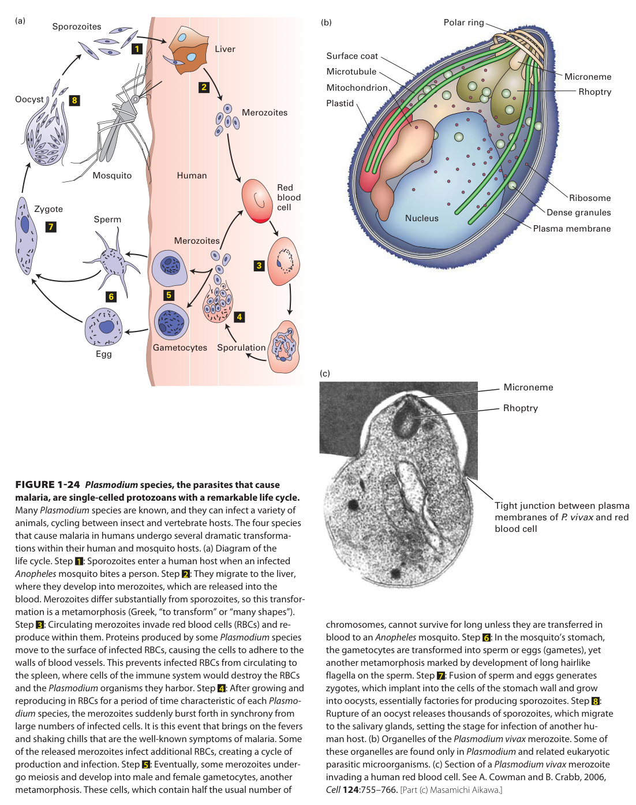
| Plasmodium | 疟原虫 |
| malaria | 疟疾 |
| merozoite | 裂殖子 |
| rhoptry | 棒状体 |
| microneme | 微线体 |
| polar ring | 极环 |
顶复门（见图 1-1）与大多数其他真核生物之间的巨大进化距离，以及其复杂生命周期所需独特细胞器的存在。
1.5 后生动物结构、分化与模式生物
多细胞生物的演化可能始于细胞分裂后保持在小群落中而不分离成个体细胞时。少数原核生物和几种单细胞真核生物（如团藻，见图 1-3d）以及许多真菌和黏菌表现出这种初级社会行为。然而多细胞性的充分绽放发生在其细胞分化并组织成不同细胞执行特化功能的群组（组织）中的真核生物。
多细胞性需要细胞-细胞和细胞-基质黏附
高等植物的细胞被包围细胞的互锁细胞壁形成的网络包裹，并由称为胞间连丝的细胞质桥连接（见图 1-12a）。动物细胞常被表面细胞黏附蛋白（常称细胞黏附分子或 CAM）"粘"成链、球或片（见图 1-4d）。一些 CAM 将细胞彼此结合；其他类型将细胞结合到胞外基质，形成内聚单位。动物中，基质缓冲细胞并允许营养物向其扩散、废物从其扩散。一种专门的特别坚韧的基质（基板，由多糖和胶原蛋白等多种蛋白质组成）形成衬于细胞片下的支撑层，防止细胞聚集体撕裂（见图 1-4）。人中的许多 CAM 和胞外基质蛋白也见于无脊椎动物，表明其在后生动物演化中的重要性。类似地，后生动物用作信号分子的许多蛋白质和小分子在人及许多无脊椎动物中保守，其受体（结合这些信号分子并在接收细胞中触发效应的细胞蛋白）亦然。例如，第 16 章讨论的信号蛋白 Wnt 同时作为果蝇 Wingless 突变中突变的基因和小鼠中致癌病毒整合位点被发现。
上皮在演化早期起源
被认为在类海洋盐水环境中演化的后生动物必须解决一个根本问题：将生物体内部与外部隔开。所有后生动物的外表面及其内部器官表面都覆盖着片状组织层（上皮）。上皮常作为屏障和保护表面，如形成皮肤的表皮细胞片（见图 1-4）。其他上皮单细胞层厚，衬于小肠等内部器官，对消化产物（如葡萄糖和氨基酸）运输到血液至关重要（见第 11 章）。如第 20 章讨论，不同身体部位的上皮有特征形态和功能。
形成上皮组织的细胞称极化的，因为其质膜组织成至少两个离散区域。典型地，极化上皮细胞的不同表面是顶面（朝外界的"顶部"）和基底及侧面（合称基底外侧，朝生物体内部）。如图 1-4 所示，基底面通常接触下方胞外基质（基板）。基底外侧质膜中的特化连接蛋白连接相邻细胞并将细胞结合到基板。
组织组织成器官
后生动物中细胞不孤立工作；分化细胞的特化群组常形成组织，组织本身是器官的主要成分。例如，小血管腔内衬内皮细胞片（内皮），防止血细胞漏出（图 1-25）。平滑肌组织层环绕内皮和基板，收缩以限制血流。惊吓时，较小外周血管收缩迫使更多血流向重要器官。血管肌层包裹在结缔组织（纤维和细胞网络，包围血管壁保护其免受拉伸和破裂）外层中。
这种组织层次在其他血管中复制，主要差别在层厚度。大动脉壁必须承受大应力，故比小血管壁厚。分组和分层不同组织的策略也用于建造其他复杂器官。每种情况下，器官功能由其组成组织的特定功能决定，组织中每种细胞类型产生使组织执行功能的特定蛋白质组。
基因组学揭示了后生动物演化和细胞功能的重要方面
后生动物--无论是如果蝇和线虫等无脊椎动物，还是小鼠和人等脊椎动物--含 13,000 至 23,000 个蛋白质编码基因，约为酵母的 3-4 倍（见表 1-2）。整个基因组测序显示
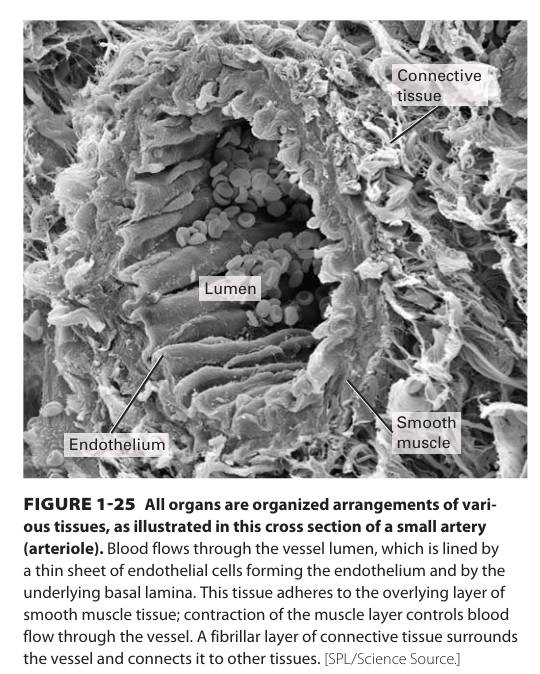
| organ | 器官 |
| tissue | 组织 |
| endothelium | 内皮 |
| smooth muscle | 平滑肌 |
| connective tissue | 结缔组织 |
这些基因中许多在后生动物中保守，遗传研究显示其中许多对特定组织和器官的形成和功能必需。因此表 1-2 中列出的许多生物用于研究这些保守蛋白在细胞发育和功能中的作用。
虽然人和小鼠基因组编码的蛋白质数量与线虫、蛙和鱼约相同，哺乳动物细胞含约线虫 30 倍的 DNA 和蛙鱼 2-3 倍的 DNA。只有约 10% 的人类 DNA 编码蛋白质。我们现在知道其余 90% 的大部分有重要功能。许多 DNA 片段结合调节附近基因表达的蛋白，允许每个哺乳动物基因在许多类型细胞中的每一种中制造精确量的 mRNA 和蛋白质。
其他 DNA 片段用于合成数千种 RNA 分子，其在调节基因表达中的功能现在才被揭示。例如，数百种不同 micro-RNA（长 20-25 核苷酸）在后生动物细胞中丰富，它们结合并抑制靶 mRNA 活性。这些小 RNA 可通过抑制 mRNA 翻译成蛋白质或触发靶 mRNA 降解（见第 10 章）间接调节大多数或所有基因的活性。
这些非蛋白质编码 DNA 的一部分可能调节使我们独特成为人的基因表达。事实上，鱼和人约有相同数量的蛋白质编码基因（约 20,000），但如上所述，人基因组是鱼的两倍多（见表 1-2）。人脑能执行如阅读和写教科书等复杂心理过程。不知怎的，这 20,000 个人类基因被精细调节，使人产生约 100,000,000,000 个神经元的脑，这些神经元在约 100,000,000,000,000 个称为突触的相互作用位点相互通讯。基因组学--研究生物体整个 DNA 序列--向我们展示了我们与最近的亲属类人猿有多近（图 1-26）。人 DNA 序列与黑猩猩和倭黑猩猩 99% 相同；1% 差异约 3,000,000 碱基对，但不知怎地解释了我们物种间的明显差异，如过去 5,000,000 年（自我们最后共享共同祖先以来）人脑的演化。
基因组学结合古生物学发现表明人和小鼠 descended 自约 7,500 万年前生存的共同哺乳动物祖先。尽管如此，两生物含约相同数量基因，约 99% 的小鼠蛋白质编码基因在人中有同源物，反之亦然。超过 90% 的小鼠和人基因组可划分为共线性区段--即沿染色体片段有相同独特 DNA 序列和基因顺序的 DNA 片段。此观察表明人和小鼠最近共同祖先的大部分基因顺序在两物种中都被保守（图 1-27）。当然，小鼠不是人；相对于人，小鼠有扩展的与免疫、生殖和嗅觉相关的基因家族，可能反映人和小鼠生活方式的差异。
不只人类演化让我们感兴趣！北极熊生活在北极，吃高脂饮食（主要由海豹组成）。最近基因组测序使研究者得出结论：北极熊及其生活在温带的棕熊亲属的最近共同祖先存在于约 500,000 年前--仅约 20,000 熊代。但在那相当短的演化时期，北极熊基因组在调节心血管功能、脂肪代谢和心脏发育的许多基因中获得了变化，使其能消费非常富含脂肪的饮食。
胚胎发育使用保守的主转录因子集
敏锐的读者会注意到前面讨论中的一个悖论：如果大多数人蛋白质编码基因与类人猿和小鼠共享，许多与蝇和虫共享，这些生物看起来和功能为何如此不同？
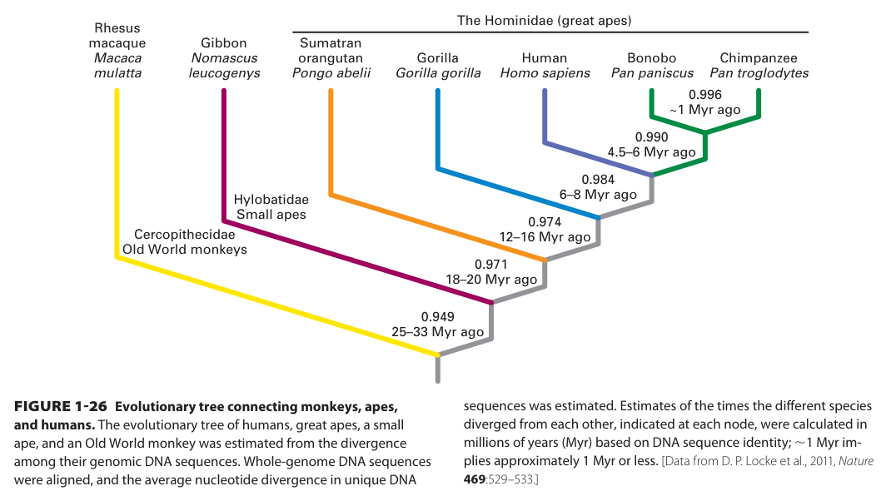
| evolutionary tree | 进化树 |
| great apes | 类人猿 |
| chimpanzee | 黑猩猩 |
此问题的答案在于基因在所有后生动物从单细胞（受精卵）发育过程中的调节方式。如第 8、9 章所学，每个蛋白质编码基因与不同生物中不同的调节 DNA 序列相关。这些调节序列许多结合指导基因表达（从而蛋白质制造量）于特定类型细胞的蛋白。其中一些蛋白称为主转录因子；这些蛋白结合调节 DNA 序列、在整个进化中保守，通过激活或抑制基因组（常在发育不同阶段）控制特定类型细胞的发育。
人胚胎发育的早期阶段与小鼠相似。特征是快速细胞分裂（图 1-28）随后
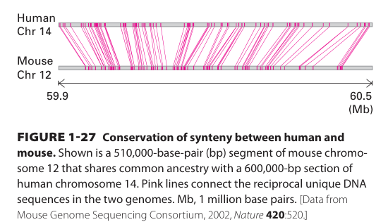
| synteny | 共线性 |
| homolog | 同源基因 |
细胞分化为组织。在所有生物中，胚胎体型（细胞类型/组织和身体部分的空间模式）源自两个影响：指定身体模式的基因程序和诱导程序不同部分的局部细胞相互作用。
除少数例外，动物显示轴对称（即左右两侧镜像）。这种最基本的模式编码在基因组中。发育生物学家根据口和肛门在早期胚胎中形成的位置将两侧对称动物门分为两大群。原口动物在早期胚胎暂态开口（胚孔）附近发育口，有腹神经索；原口动物包括所有蠕虫、昆虫和软体动物。后口动物在此暂态开口附近发育肛门，有背侧中枢神经系统；包括棘皮动物（如海星和海胆）和脊椎动物。原口动物和后口动物的身体都分成在胚胎发育早期形成的离散体节。原口动物和后口动物可能从约 6 亿年前生存的称为 Urbilateria 的共同祖先演化而来（图 1-29a）。
许多模式基因编码主转录因子，控制其他基因表达并指定生物体的一般组织，从主要体轴（前后/头尾、背腹/背肚和左右）开始，以头、胸、腹和尾等体节结束。从最简单蠕虫到哺乳动物的轴对称保守性可由其基因组中保守
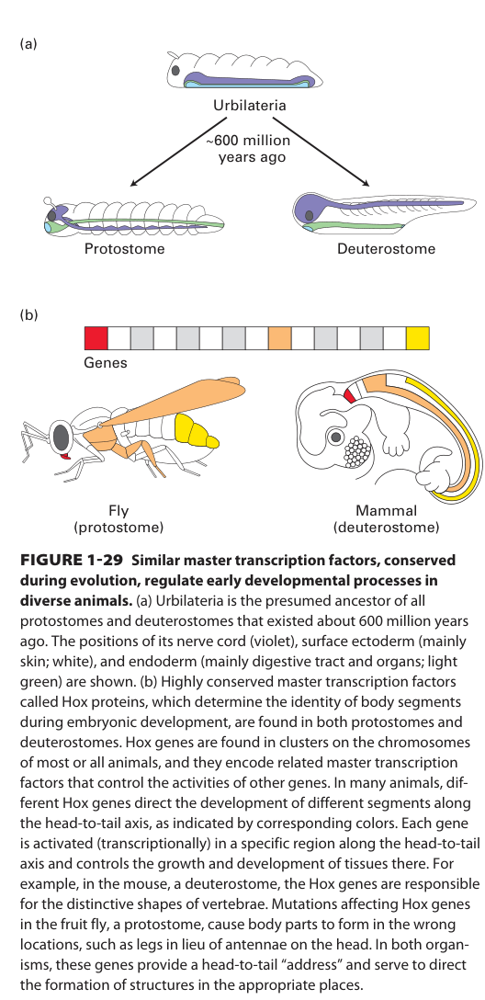
| master transcription factor | 主转录因子 |
| Urbilateria | Urbilateria |
| protostome | 原口动物 |
| deuterostome | 后口动物 |
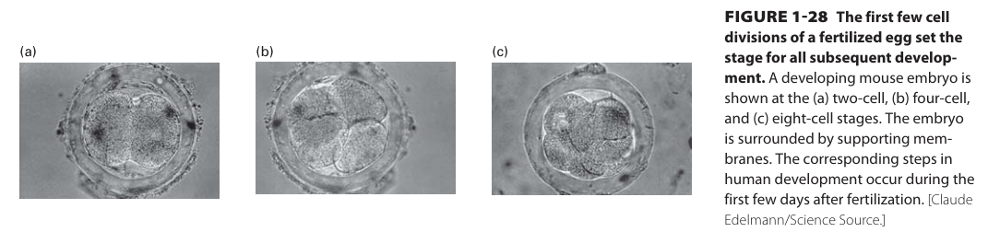
| fertilized egg | 受精卵 |
| embryo | 胚胎 |
| cell division | 细胞分裂 |
模式基因的存在解释。其他模式基因编码在细胞黏附或细胞信号传导中重要的蛋白质。这种广泛的模式基因库允许整合和协调发育胚胎不同部分的事件，并赋予身体每个体节独特身份。
值得注意的是，许多编码主转录因子的模式基因在原口动物和后口动物中都高度保守（图 1-29b）。这种体型保守反映了在进化压力下保留不同生物发育控制的分子和细胞机制共同性。例如，蝇眼和人眼在结构、功能和神经连接上非常不同。尽管如此，启动眼发育的主转录因子--蝇的 eyeless 和人的 Pax6--是高度相关的蛋白质，调节其他基因活性并 descended 自相同祖先基因。eyeless 或 Pax6 基因突变导致眼形成重大缺陷（图 1-30）。
涡虫用于研究干细胞和组织再生
单细胞生物中，两个子细胞通常（虽不总是）与亲代细胞相似。类似地，多细胞生物中，许多类型细胞分裂时子代细胞看起来很像亲代--例如肝细胞分裂产生与亲代有相同特征和功能的肝细胞，胰腺产胰岛素细胞亦然。相比之下，干细胞和某些其他未分化细胞能产生多种类型的分化后代细胞；这些细胞常以两子细胞不同的方式分裂。这种不对称细胞分裂是干细胞的特征，对体内不同细胞类型的产生至关重要（见第 21 章）。通常一个子细胞在保持未分化和保留产生多类型分化细胞能力方面像其亲代。另一子细胞多次分裂，其每个子细胞分化为特定类型细胞。
涡虫 Schmidtea mediterranea 以其从解剖形成的微小身体部分再生完整个体（含正常头）的能力而闻名（见图 1-22e）。涡虫含干细胞
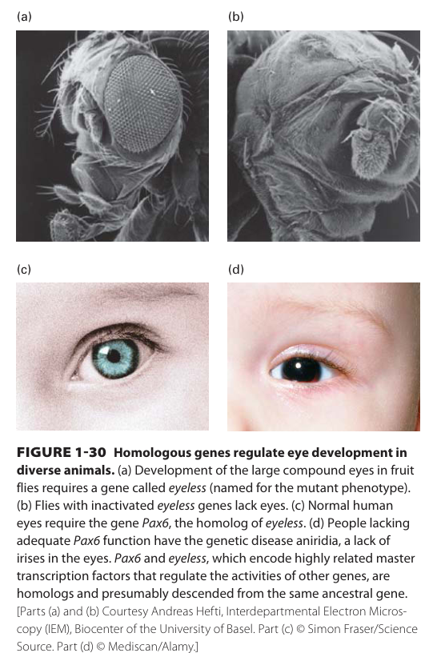
| eyeless | eyeless基因 |
| Pax6 | Pax6基因 |
| homologous | 同源 |
| compound eye | 复眼 |
替换正常周转丢失的细胞。在解剖动物的片段中，它们经过几次细胞分裂后将产生再生中所需的任何细胞类型。这些干细胞作为发现头和尾（各由多种类型细胞构建）如何形成的有效实验系统（见第 16、21 章）。指导身体不同部位干细胞产生特定类型细胞的激素与哺乳动物（包括人）发育中使用的相似（见第 16 章），因此未来涡虫再生研究可能告知科学家如何再生人身体部分如手或眼。
无脊椎动物、鱼、小鼠和其他生物作为研究人发育和疾病的实验系统
有大脑细胞胚胎且在母体外发育的生物（如蛙、海胆、鱼和鸡）对追踪细胞形成不同组织时的命运以及制备生化研究提取物极为有用。例如，调节所有真核生物（包括人）细胞分裂的关键蛋白首先在海星和海胆胚胎研究中鉴定，随后从这些胚胎制备的提取物中纯化（见第 19 章）。
特化组织细胞的研究利用动物和植物模式生物。例如神经元和肌细胞传统上在哺乳动物或细胞特别大或可及的生物中研究，如枪乌贼和海兔的巨大神经细胞或鸟飞行肌细胞。最近，肌肉和神经发育在果蝇、线虫和斑马鱼中广泛研究，其中肌肉和神经形成或功能所需基因的突变易分离（见图 1-22）。
小鼠比其他实验生物有一个巨大优势：它们是多年来有强大遗传方法可用的与人最密切相关的动物。小鼠和人共享栖息地千年，有相似神经系统、相似免疫系统，受许多相同病原体感染。如前所述，两生物含约相同数量基因，约 99% 的小鼠蛋白质编码基因在人基因组中有同源物，反之亦然。
用近年开发的重组 DNA 技术，研究者可灭活任何所需基因从而废除其编码蛋白的产生。这种特定突变可引入蠕虫、蝇、蛙、海胆、鸡、小鼠、多种植物和其他生物的基因组，允许评估这些突变的影响。用第 6 章描述的 Cas9 实验系统，此方法正广泛用于在小鼠及其他动物中产生人类遗传病的动物版本。例如，自闭症谱系障碍患者常有特定蛋白质编码基因突变。为理解这些突变的作用，这些基因已在小鼠中灭活；许多情况下小鼠表现出人类疾病症状，包括过度理毛等重复行为，有力表明人突变确实在触发障碍中起作用。过去一年内，类似技术已用于产生靶基因灭活的猴。此类方法可用于揭示特定基因在学习和记忆等高阶脑任务中的作用，或研究只感染人和非人灵长类的病毒。一旦有人类疾病的动物模型可用，可进一步研究引起疾病的分子缺陷并测试新疗法，从而最大限度减少在人身上测试新药。
遗传疾病阐明细胞功能的重要方面
许多遗传疾病由单个蛋白质突变引起；对这些患者的研究阐明了这些蛋白质的正常功能。例如，
考虑杜氏肌营养不良（DMD），最常见的遗传性肌肉萎缩疾病（统称肌营养不良）。DMD 是 X 染色体连锁疾病，影响 1/3300 男孩，导致心脏或呼吸衰竭和死亡，通常在十几岁后期或二十几岁早期。理解该疾病分子基础的第一条线索来自发现 DMD 患者携带名为抗肌萎缩蛋白的基因编码蛋白突变。如第 17 章详述，这种非常大的蛋白后来被发现是胞质接头蛋白，结合作为细胞骨架一部分的肌动蛋白丝（见图 1-13）和称为肌聚糖复合物的肌质膜蛋白复合物（图 1-31）。由此产生的大多蛋白聚集体（抗肌萎缩蛋白糖蛋白复合物 DGC）将胞外基质蛋白层粘连蛋白连接到肌细胞内的细胞骨架。抗肌萎缩蛋白、其他 DGC 组分或层粘连蛋白突变可破坏 DGC 介导的肌细胞内外连接，导致肌无力和最终死亡。鉴定整个抗肌萎缩蛋白糖蛋白复合物的第一步涉及用正常个体和杜氏肌营养不良患者的 DNA 克隆编码抗肌萎缩蛋白的基因。
后续章节呈现大量实验数据解释我们如何知道我们所知道的关于细胞结构和功能
本书后续章节我们更详细讨论细胞过程。从讨论细胞构建块的化学性质
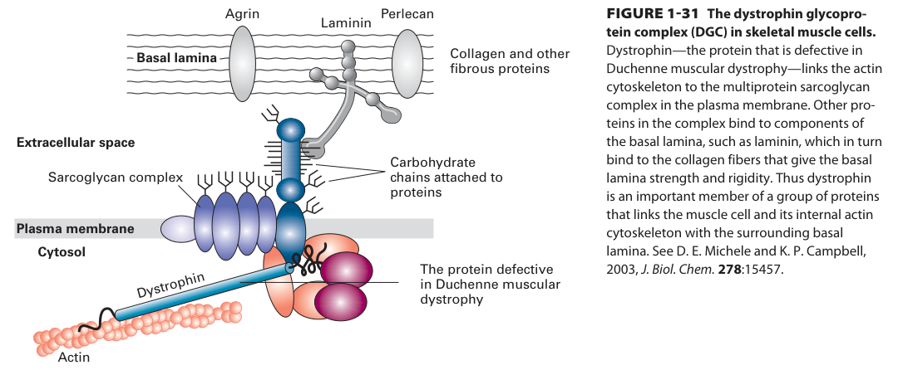
| dystrophin | 抗肌萎缩蛋白 |
| DGC | 抗肌萎缩蛋白糖蛋白复合物 |
| laminin | 层粘连蛋白 |
| cytoskeleton | 细胞骨架 |
| actin | 肌动蛋白 |
和后续章节讨论的大分子过程所需的基本化学过程开始（第 2 章）。接着讨论蛋白质的结构和功能（第 3 章）。第 4 章讨论生物学家用于培养和分部细胞及可视化细胞内特定蛋白质和结构的许多技术。第 5 章描述 DNA 如何复制、DNA 片段如何复制成 RNA、蛋白质如何在核糖体上合成。第 6 章描述用于研究基因、基因表达和蛋白质功能的许多技术，包括产生特定遗传突变的动物。生物膜结构是第 7 章主题。基因和染色体结构及基因表达调节在第 8、9、10 章讨论。离子和小分子跨膜运输在第 11 章讨论，第 12 章讨论细胞能学及线粒体和叶绿体功能。膜生物发生、蛋白质分泌和蛋白质运输（将蛋白质导向其正确亚细胞目的地）是第 13、14 章主题。第 15、16 章讨论细胞通讯和调节其活动的多种信号和信号受体。细胞骨架和细胞运动在第 17、18 章讨论。第 19 章讨论细胞周期及细胞分裂如何调节。细胞间及细胞与胞外基质间使组织和器官形成的相互作用在第 20 章详述。后续章节讨论重要的特化细胞类型--干细胞（第 21 章）、神经元（第 22 章）和免疫系统细胞（第 23 章）。第 24 章讨论癌症及细胞生长和分化被突变改变的多种方式。
本页留白。